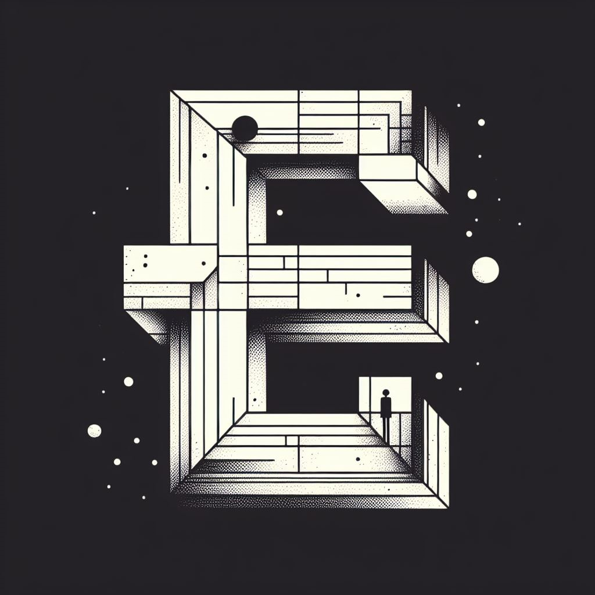

<!DOCTYPE html>
<html lang="en">
  <head>
    <meta charset="UTF-8">
    <meta name="viewport" content="width=device-width, initial-scale=1.0">
    <title>H. Reza</title>
     <link href="https://fonts.googleapis.com/css?family=Caveat|Montserrat:400,600&display=swap" rel="stylesheet">
    <link rel="stylesheet" href="styles.css">
    <!-- <link rel="stylesheet" href="https://pyscript.net/latest/pyscript.css" />
    <script defer src="https://pyscript.net/latest/pyscript.js"></script> -->
  </head>
  <body>
    <main>
      <!-- *** ABOUT / PROFILE *** -->
      <header>
        <div class="content-wrap">
          <h1>H. Reza</h1>
		      <h1>Mohammadiha</h1>
          <h2> Game Researcher</h2>
          <p>But .. As a Director, I'll try to juxtapose creative thinkings of a team or company to create an amazing experience. As a Designer, I try to find and fix some Heterogeneities to bring a little more beauty to this world.</p>
        </div>
      </header>


      <section class="content-wrap">
	      <p> </p>


	      <h2>My PhD </h2>
	     
	      <p><strong>GameTheory: The Problem</strong> 
		      <br>
		      <br>This chapter introduces the basic concepts and definitions of game theory, such as players, strategies, payoffs, outcomes, and equilibria. It also explains the main types and classifications of games, such as normal form, extensive form, simultaneous, sequential, zero-sum, non-zero-sum, symmetric, asymmetric, and repeated games. It also discusses the main problems and challenges that game theory aims to address, such as how to model rational behavior, how to predict and explain the outcomes of strategic interactions, and how to design and implement mechanisms that achieve desirable social goals.<br>
		      <br>
		      <i>Game theory is the name given to the methodology of using mathematical tools to model
			and analyze situations of interactive decision making. These are situations involving
			several decision makers (called players) with different goals, in which the decision of
			each affects the outcome for all the decision makers. This interactivity distinguishes game
			theory from standard decision theory, which involves a single decision maker, and it is
			its main focus. Game theory tries to predict the behavior of the players and sometimes
			also provides decision makers with suggestions regarding ways in which they can achieve
			their goals.
			The foundations of game theory were laid down in the book The Theory of Games and
			Economic Behavior, published in 1944 by the mathematician John von Neumann and the
			economist Oskar Morgenstern. The theory has been developed extensively since then and
			today it has applications in a wide range of fields. The applicability of game theory is due
			to the fact that it is a context-free mathematical toolbox that can be used in any situation
			of interactive decision making.</i> </p>

	      		<br>
		      
	      		<br>
	      

	      <p><strong>GameDesign: The Model</strong>
		      <br>
		      <br>This chapter explains how game design is a process of creating a model of a game, which is a simplified representation of the game’s system, rules, and elements. It also discusses how game design is influenced by various factors, such as the game’s goals, audience, platform, and genre. It gives examples of different types of game models, such as paper prototypes, digital prototypes, and mathematical models. It also offers some tips and guidelines for creating and evaluating game models.<br>
		      <br>
		      <i>We must be absolutely clear on this point before we can proceed. The game is not 
			the experience. The game enables the experience, but it is not the experience. This 
			is a hard concept for some people to grasp. The ancient Zen question addresses this 
			directly: “If a tree falls in the forest, and no one is there to hear it, does it make a 
			sound?” This has been repeated so often that it sounds hackneyed, but it is exactly
			what we are talking about. If our definition of “sound” is air molecules vibrating, 
			then yes, the tree makes a sound. If our definition of sound is the experience of hearing a sound, then the answer is no, the tree makes no sound when no one is there. 
			As designers, we don’t really care about the tree and how it falls—we care only 
			about the experience of hearing it. The tree is just a means to an end. And if no one 
			is there to hear it, well, we don’t care at all.</i> </p>
	      		
	      		<br>
		      
	      		<br>

	      <p><strong>GamePlay: The Solution</strong>
		      <br>
		      <br>This chapter Shows how games can provide effective and satisfying solutions to the challenges and issues that we face in the real world. It also explores how games can inspire us to create our own solutions and share them with others. It gives examples of games that have successfully solved or improved real-world problems, such as World Without Oil, Foldit, and EVOKE. It also offers some tips and guidelines for designing and playing games that can make a difference.<br>
		      <br>
		      <i>Anyone who sees a hurricane coming should warn others. 
			I see a hurricane coming. 
			Over the next generation or two, ever larger numbers of 
			people, hundreds of millions, will become immersed in virtual worlds and online games. While we are playing, things 
			we used to do on the outside, in “reality,” won’t be happening anymore, or won’t be happening in the same way. You 
			can’t pull millions of person-hours out of a society without creating an atmospheric-level event. 
			If it happens in a generation, I think the twenty-first 
			century will see a social cataclysm larger than that caused 
			by cars, radios, and TV, combined. . . . The exodus of these 
			people from the real world, from our normal daily life, will 
			create a change in social climate that makes global warming look like a tempest in a teacup</i> </p>
	      		
	      		<br>
		       
	      		<br>
	     
	      <p><br></p>

	      
        <h2>My Studies </h2>
	      
	      <p><strong>Madame Bovary </strong> <br> <i>Novel by Gustave Flaubert</i> </p>
	      <p><strong>Notes from Underground </strong> <br> <i>Novel by Fyodor Dostoevsky</i> </p>
	      <p><strong>The Merchant of Venice </strong> <br> <i>Play by William Shakespeare</i> </p>
	      <p><strong>Jacques the Fatalist</strong><br> <i>Novel by Denis Diderot</i> </p>
	      
	      <p><br></p>
	
	      <p><strong>Game Theory: </strong> <br> What is game theory? <br> <i>Book by M Maschler, S Zamir, E Solan - 2020</i> </p>
	      <p><strong>The Art of Game Design: </strong> <br> The Book of Lenses <br> <i>Book by Jesse Schell - 2014</i> </p>
	      <p><strong>Reality Is Broken: </strong> <br> Why Games Make Us Better and How They Can Change the World <br> <i>Book by Jane McGonigal - 2011</i> </p>
	      

	      <p><br></p>
	      
	      <p><strong>Fooled by Randomness : </strong> <br> The Hidden Role of Chance in Life and in the Markets <br> <i>Book by Nassim Nicholas Taleb</i> </p>
	      <p><strong>Life 3.0 :</strong> <br> Being Human in the Age of Artificial Intelligence <br> <i>Book by Max Tegmark</i> </p>
	      <p><strong>A Beautiful Math :</strong> <br> Game Theory, and the Modern Quest for a Code of Nature <br> <i>Book by Tom Siegfried</i> </p>
	      
	      <p><br></p>
	      
<!-- 	      <p> <strong> ... </strong>  <br> ... <br>  <i>...</i>  <br> ... </p> -->
	      
		<div>
<!-- 			<iframe src="https://www.linkedin.com/embed/feed/update/urn:li:share:7087389807663796224" height="1470" width="504" frameborder="0" allowfullscreen="" title="Embedded post"></iframe> -->
		</div>
	      
<!-- 	      <div style="position: relative; width: 100%; height: 0; padding-top: 56.2500%;
 padding-bottom: 0; box-shadow: 0 2px 8px 0 rgba(63,69,81,0.16); margin-top: 1.6em; margin-bottom: 0.9em; overflow: hidden;
 border-radius: 8px; will-change: transform;">
  <iframe loading="lazy" style="position: absolute; width: 100%; height: 100%; top: 0; left: 0; border: none; padding: 0;margin: 0;"
    src="https:&#x2F;&#x2F;www.canva.com&#x2F;design&#x2F;DAFmcF1U0TE&#x2F;view?embed" allowfullscreen="allowfullscreen" allow="fullscreen">
  </iframe>
</div>
<a href="https:&#x2F;&#x2F;www.canva.com&#x2F;design&#x2F;DAFmcF1U0TE&#x2F;view?utm_content=DAFmcF1U0TE&amp;utm_campaign=designshare&amp;utm_medium=embeds&amp;utm_source=link" target="_blank" rel="noopener">Serious Game</a> توسط Hamidreza Mohammadiha
 -->
	      
<!-- 	      
	      <div class="wrapper1">
		<dev> 
			<iframe src="https://prezi.com/p/embed/U07kmypf22wQQlG5x48I/" id="iframe_container" frameborder="0" webkitallowfullscreen="" mozallowfullscreen="" allowfullscreen="" allow="autoplay; fullscreen" height="315" width="560"></iframe>		</dev>
		      
		<div>
		  <strong>My Thesis Innovation: </strong>
		  <p>    The user is requesting a game theoretical explanation for how being irrational can lead to winning in certain economic games.
			  In game theory, there are various types of games, including zero-sum games, non-zero-sum games, and cooperative games.
			  In some non-zero-sum games, being irrational can actually be an advantage.
			  For example, in the Prisoner's Dilemma game, two players are faced with the decision to either cooperate or defect.
			  If both players cooperate, they both receive a moderate payoff.
			  If one player defects while the other cooperates, the defector receives a high payoff while the cooperator receives a low payoff.
			  If both players defect, they both receive a low payoff.
			  The rational strategy in this game is to defect, as it provides the highest payoff regardless of what the other player does.
			  However, if both players adopt this strategy, they both end up with a low payoff.
			  On the other hand, if both players choose to cooperate, they both receive a moderate payoff.
			  In this case,
			  being irrational and choosing to cooperate even though it is not the rational choice can lead to a better outcome for both players.
			  This is because the irrational choice of cooperation can signal trustworthiness and lead to a more cooperative relationship in future interactions.
			  Therefore, in certain economic games, being irrational can be a winning strategy if it leads to better long-term outcomes.
			  
		  </p>
          	</div>
		      
          	<div>
		  <strong>#3: </strong>
		  <p>     Finally, I've decided to write it down.
			  I don't know where this will lead me, but I am going to do it.
			  
			  I aim to finish the 1st season of Mr. Robot's adventure, which was published through a collaboration between USA Network, Universal Cable Production, and Anonymous Content.
			  As always, I'm really confused about the reality and it's beyond. I was dreaming of a boy who has great genius but he was trying to ignore himself.
			  He can write and can talk but cannot find out the main point. He kept his mind for a long time but he was scared of almost everything except his curiosity.
			  He loves the majesty of love and could not stop avoiding his fate. He has a mystery job and cannot face it in terms of crime, but it seems he should. 
			  ll passwords and all backwards are all the same. We are here with..out key-fingers to make everything and every moment extraordinary dramatic.
			  If you track me, leave me here and take a deep breath.
			  
			  Have you ever tried mushrooms?
			  I guess you have, but it's possible that you never mentioned your experience in any of your essays or articles.
			  You cannot rationalize your wonder in logical forms. Most of us take it too seriously, and that's how we lose our beautiful minds.
			  
			  
		  </p>
          	</div>
        </div>
	      
	      <div class="wrapper1">
          <div>
		  <strong>#2: </strong>
		  <p>     Finally, I've decided to write it down.
			  I don't know where this will lead me, but I am going to do it.
			  
			  I just finished the seventh episode of Mr. Robot's adventure,
			  which was published through a collaboration between USA Network, Universal Cable Production,
			  and Anonymous Content. What a psychologically compelling show! It revolves around a seemingly robotic,
			  eccentric young man named Elliot who starts hacking ALLSAFE to help the community.
			  However, there seems to be no clear mind to assist him. I love Elliot,
			  but sometimes I want to kill him for the sake of him. In the last few days,
			  I've been considering creating a database to introduce my old friends to new ones and vice versa.
			  This would enable us to travel more affordably and continue our adventures together.
			  But then I thought, am I hacking them? What's the difference between a mafia crime network and a family organization? 
			  Considering my inner point of view, it hurry me to design a journey plan that would lead me to an endless curiosity,
			  through the spotless minds of my friends, in both the past and future, and also night and day dreamings.
			  It would be like Alice crawling on all fours to follow White Rabbit.
			  
			  Have you watched "Alice in Wonderland 1951"? I traveled to this wonderland with Alice today again for the 2nd time, 
			  and I still see glimpses of this wonder with me.
			  Have you ever chased the white rabbit? Have you ever had an unbirthday party? Have you ever tried mushrooms?
			  I guess you have, but it's possible that you never mentioned your experience in any of your essays or articles.
			  You cannot rationalize your wonder in logical forms. Most of us take it too seriously, and that's how we lose our beautiful minds.
			  
			  
		  </p>
          </div>
        </div>

        <div class="wrapper1">
          <div>
		  <strong>#1: </strong>
		  <p>     Finally, I've decided to write it down.
			  I don't know where this will lead me, but I am going to do it.
			  
			  After a while of playing and watching some games, I realized it was pointless to fight seriously.
			  We should only fight like animals to get our food and ensure our survival on this planet.
			  We go to school to learn how to do this in respect to our culture and society. That's all we do it for, in terms of humanity.
			  But what if we traveled to a new world? Utopia, paradise, or hell. It doesn't matter where, just think about any other world.
			  
			  Have you watched "Alice in Wonderland 1951"? I traveled to this wonderland with Alice today for the 1st time, 
			  and I see glimpses of this wonder with me.
			  Have you ever chased the white rabbit? Have you ever had an unbirthday party? Have you ever tried mushrooms?
			  I guess you have, but it's possible that you never mentioned your experience in any of your essays or articles.
			  You cannot rationalize your wonder in logical forms. Most of us take it too seriously, and that's how we lose our beautiful minds.
		  </p>
          </div>
        </div> -->
	      
	       


          <!-- <div class="box b">B</div>
          <div class="box c">C</div>
          <div class="box d">D</div>
          <div class="box e">E</div>
          <div class="box f">F</div> -->
        
      </section>
		
      <section class="projects">
        <div class="content-wrap divider">
          <h2>My Experiences</h2>
          <p>View selected projects below.</p>

          <!-- Project 1 -->
          <section class="project-item">
            
            <h3>Solico Group (2021-2023)</h3>
            <p>Solico Group is a multinational food company. It produces, trades, distributes, and sells food in more than 10 countries. Dairy products, ice cream, ready-meal, beverages, and snacks are offered by the group in the retail and food service sectors</p>
			      <p><strong>My Role</strong>: Strategic Planning Team Member&nbsp;</p>
			      <p><strong>Project Medium:</strong> Gamification</p>
            <a class="btn" href="https://www.solico-group.com" target="_blank">Website</a>
          </section>

          <!-- Project 2 -->
          <section class="project-item">
            
            <h3>Gamein Sharif (2021)</h3>
            <p>Gamein is a real-world simulator that involves the academic environment in industrial challenges through a gamification. This competition is held at Sharif University, 
			         one of the best universities in Iran in engineering and technology fields.</p>
			      <p><strong>My Role:</strong> Serious Game Design Head - 2021</p>
			      <p><strong>Project Medium:</strong> Beverage Business Simulation</p>
            <a class="btn" href="https://gamein.ie.sharif.ir/" target="_blank">Website</a>
          </section>

          <!-- Project 3 -->
          <section class="project-item">
            
            <h3>Iran's National Elites Foundation (2020)</h3>
            <p>Iran's National Elites Foundation (INEF) is an Iranian governmental organization founded on May 31, 2005, by approval of the Supreme Cultural Revolution Council of Iran. The foundation’s main purpose is to recognize, organize and support Iran's elite national talents.</p>
			      <p><strong>My Role</strong>: Project Controler&nbsp;</p>
			      <p><strong>Project Medium:</strong> Supply Chain Game Simulation</p>
            <a class="btn" href="https://en.bmn.ir/" target="_blank">Website</a>
          </section>
        </div>
      </section>

      <!-- ***  WORK EXPERIENCE  *** -->
      <section class="work-experience item-details">
        <!-- <div class="content-wrap divider">
          <h2>New Presentation</h2>
          <p>Hello everyone!</p>
          <p>This is my first presentation in Iranian new year and I'm glad to publish it in my personal website.</p>
          <p>"How an Economy Grows and Why it Crashes (2010)" is an illustrated book on various economic topics by Peter Schiff and Andrew Schiff. The book allegorically explores such topics as inflation, deficit spending, central banking, international trade, and the housing bubble and credit collapse of 2008.</p>
          

          <iframe width="560" height="315" src="https://www.youtube.com/embed/T769AScvRLc" title="How Economy Grows & Why it crashes?" frameborder="1" allow="accelerometer; autoplay; clipboard-write; encrypted-media; gyroscope; picture-in-picture; web-share" allowfullscreen></iframe>
          <p> Tube!!!</p>
          <iframe width="560" height="315" src="https://www.youtube.com/embed/TWnGnG2-sZM" title="YouTube video player" frameborder="1" allow="accelerometer; autoplay; clipboard-write; encrypted-media; gyroscope; picture-in-picture; web-share" allowfullscreen></iframe>
        </div> -->
          <!-- <p>Thanks youtube !</p> -->
          <!-- <py-script src="NimTaj.py"></py-script> -->
          <!-- <a style="text-decoration: underline;" href="https://github.com/pyscript/pyscript/issues/257#issuecomment-1119595062">this reference</a> -->
        </section>
		
		
        </div>
	    
      </section>

           <!-- *** EDUCATION *** -->
		  <section class="education item-details">
        <div class="content-wrap">
        <h2>My Educations</h2>
          <section>
          <h3> Sharif University - Tehran</h3>
            <p>Master of Science in Industrial Engineering, 2020-Now</p>
			      <p><strong>GPA</strong>: 3.46/4.00</p>
			      <p><strong>Thesis</strong>: Agent-Based-Simulation of a Store&nbsp;</p>
			      <p><strong>Supervisor</strong>: Dr. Shokraneh K. Moghaddam</p>
			    <h3>Sharif University - Tehran</h3>
			      <p>bachelor of Science in Industrial Engineering,<strong> </strong>2016-2020</p>
			      <p><strong>GPA</strong>: 3.93/4.00</p>
			      <p><strong>Project:</strong> Discrete-Event-Simulation of a Restaurant&nbsp;</p>
        </div>
      </section>

      

      <!-- *****************  CONTACT INFO / SOCIAL MEDIA  ***************** -->
      <footer>
        <div class="content-wrap">
          <h2>Let's Keep in Touch!</h2>

          <!-- Social media and contact links. Add or remove any networks. -->
          <ul class="contact-list">
            <li><a href="mailto:Hamidreza.Mohammadihaa@Gmail.com">Email</a></li>
            <li><a href="https://www.linkedin.com/in/hamidreza-mohammadiha/" target="_blank">Linkedin&nbsp;</a></li>
            <li><a href="https://t.me/hamid76reza" target="_blank">Telegram</a></li>
           
          </ul>
        </div>
  </footer>
    </main>
  </body>
</html>
